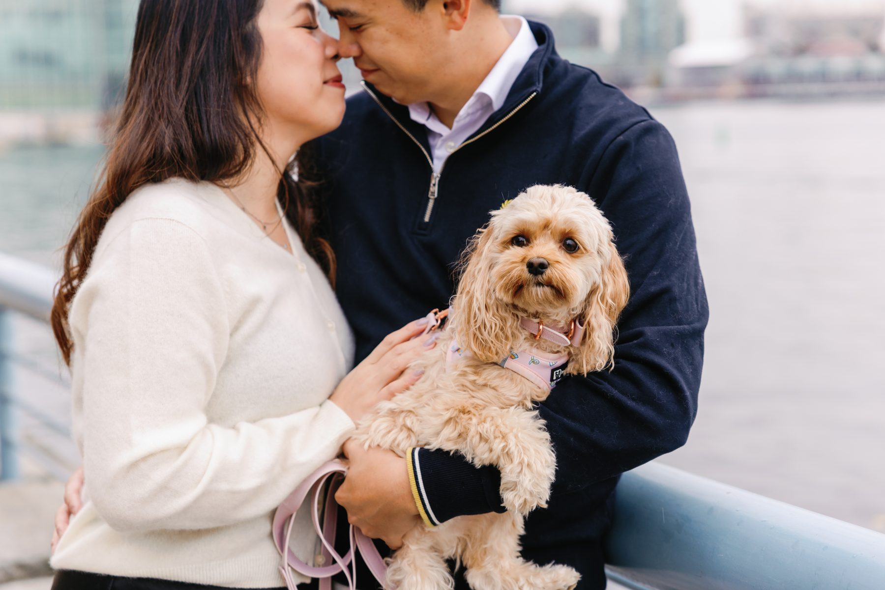
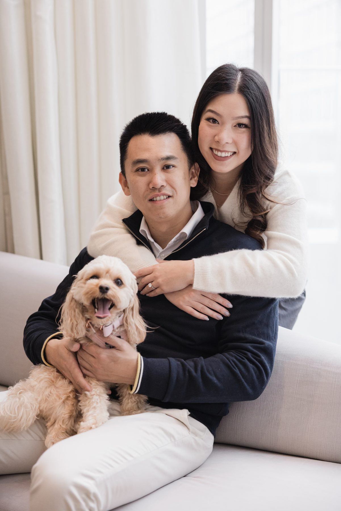
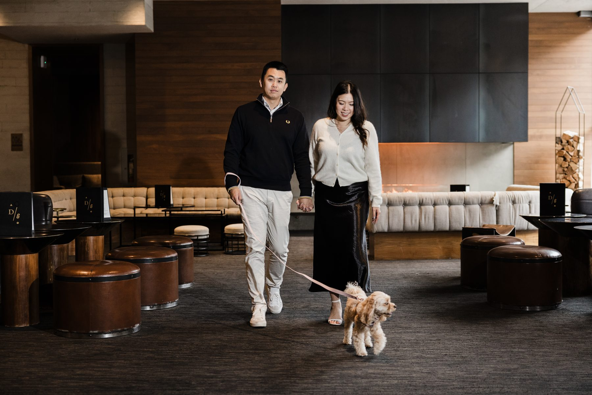
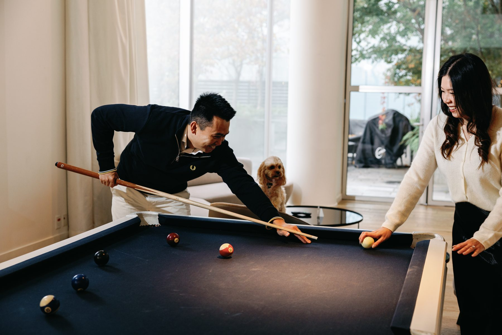
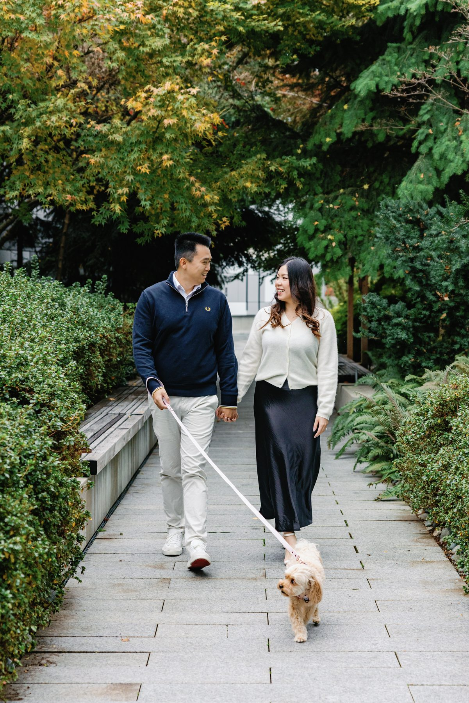
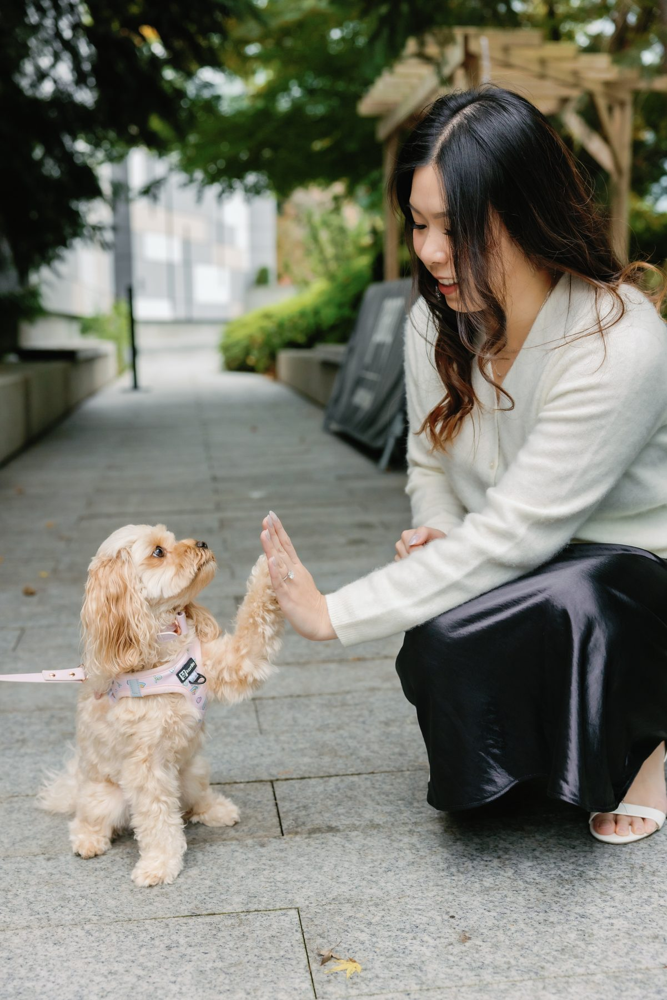
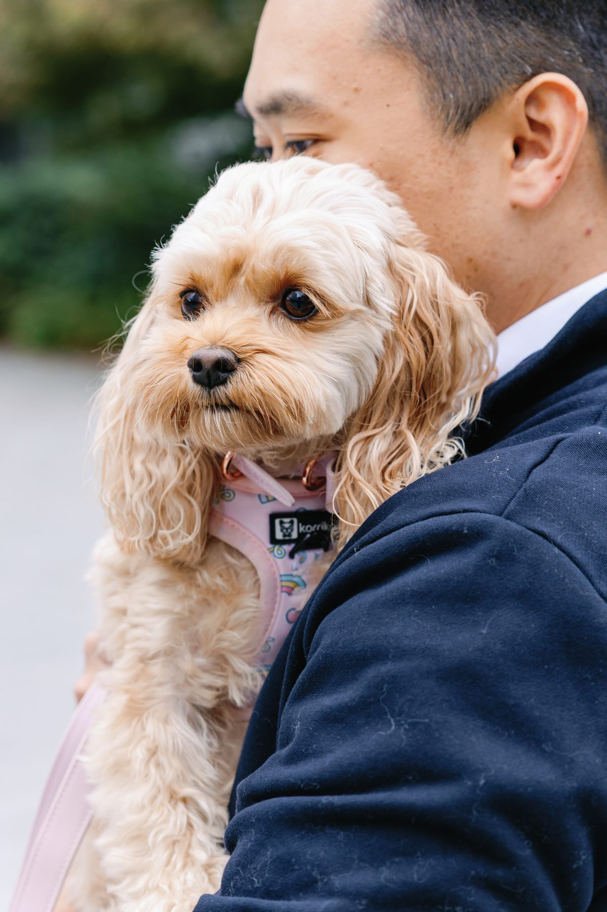
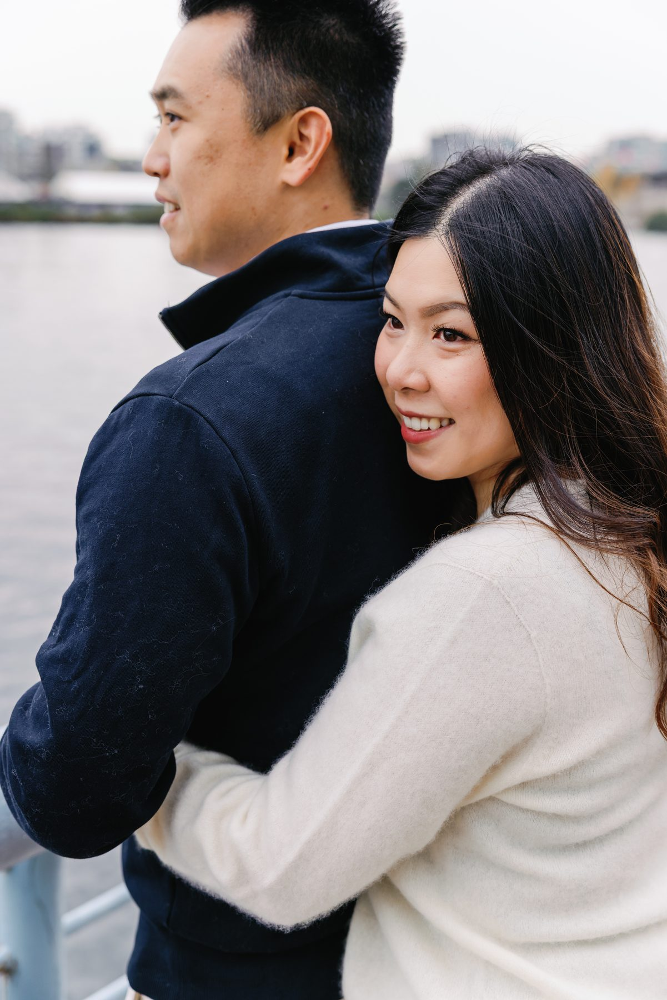

Half the couples who book an engagement session ask the same thing in the first email. Can we bring the dog?
Yes. Bring the dog. But I am going to be honest about it, because most advice on this comes from people who have never tried to get a dog to look at a lens. A dog does not make your photos better by showing up. A dog makes your photos better when you plan the session around it.
Here is how we do it, using a recent session with a couple and their small, fluffy, very food-motivated dog.
This is the contrarian part. Your dog should not be in the whole session.
Most dogs give you about half an hour of good behaviour. After that they are bored, tired or deeply interested in a seagull. So we plan the dog frames as one block, shoot them early while everyone is fresh, and then the dog clocks out.
That also protects your main portraits. The close, quiet frames of the two of you are hard to get with a leash wrapped around your ankles.
We started this session inside, in a condo amenity lounge. Sofas, bookshelves, a pool table. Nothing fancy.
Starting indoors is the best trick I know. No squirrels. No other dogs. No wind. The dog sniffs around for five minutes, decides the room is boring, and settles.

Sit down first. A dog on a lap is calm, at face height and going nowhere. It is the easiest frame of the day, so we take it before anything else.

Then walk. A leash walk across a room gives the dog a job and gives the two of you something to do with your hands. Nobody has to pose.
Bring a friend. A sibling, a neighbour, anyone the dog knows. Their job is to hold the leash between setups, stand behind me with a treat when I need the dog to look up, and take the dog home when its part is done.
Without a helper, one of you is always half watching the dog. I can see it in your face in every frame.

With the dog handed off, these two played pool. That is the point. Once somebody else has the leash, you stop managing and start being yourselves.
And take the edge off beforehand. A short walk before we start is the difference between a dog that sits and a dog that launches.
Wear something you can crouch in. You will be on the floor, on the path, picking up a dog. Skip anything that shows every hair. Cream and navy worked here because the dog is cream. A black coat and a white dog is a lint roller job. Bring the lint roller either way.
The rest of the outfit advice is the same as any session, and it is all in engagement outfits that still look good in five years.
Once the dog had the hang of it, we moved out to a garden path, then down to the seawall.


The high five was not planned. She crouched down, the dog offered a paw, I pressed the button. You cannot direct that. You can only make room for it by not rushing.

Get one frame that belongs to the dog. Close, in someone's arms, eyes on the camera. That is the one that ends up framed in the hallway.
Look at where this session happened. A lounge, a garden path and the seawall, all a short walk apart. No mountain. No two hour drive with a carsick dog.
Close and familiar beats dramatic and far. The dog is calmer, you are calmer, and the photos look like your real life. If you want ideas anyway, here are our favourite engagement photo locations around Vancouver. Check the dog rules before you pick one. Some parks and beaches are on-leash only, and some do not allow dogs at all.

Then the dog went home with the helper, and we finished with the two of them alone by the water. These are the calm frames. They only work because nobody is holding a leash.
Some dogs should skip it. If yours is reactive around strangers, panics in new places or is a puppy with no leash manners yet, forcing it will stress all three of you. Do the session without the dog, or keep the dog frames to your own living room where it feels safe.
A stressed dog looks stressed in photos. So do its owners.
SimplyWed Studio is a Vancouver wedding and engagement photography studio. Tell us about your dog through the contact page: size, energy, favourite treat. We will build the session around it.
← Back to the journal